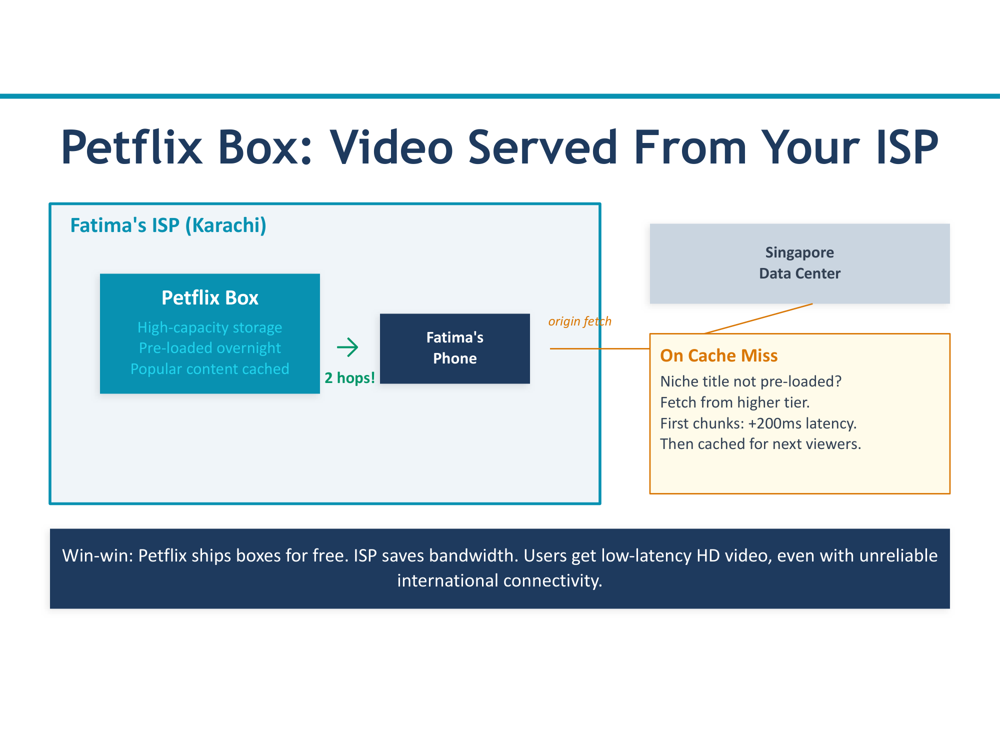
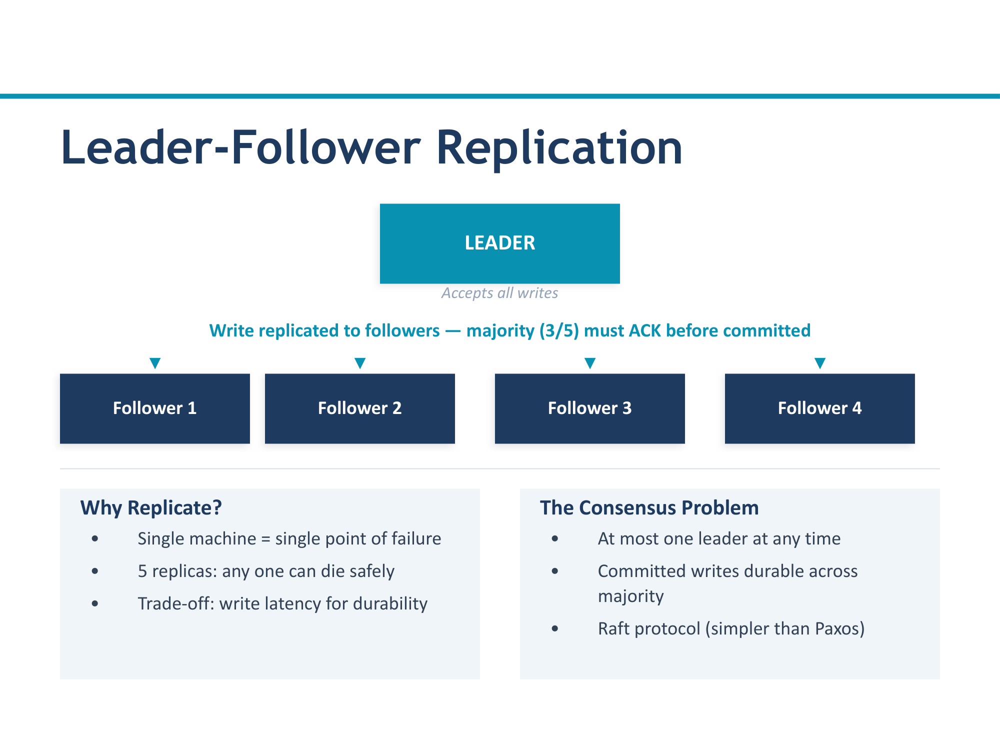
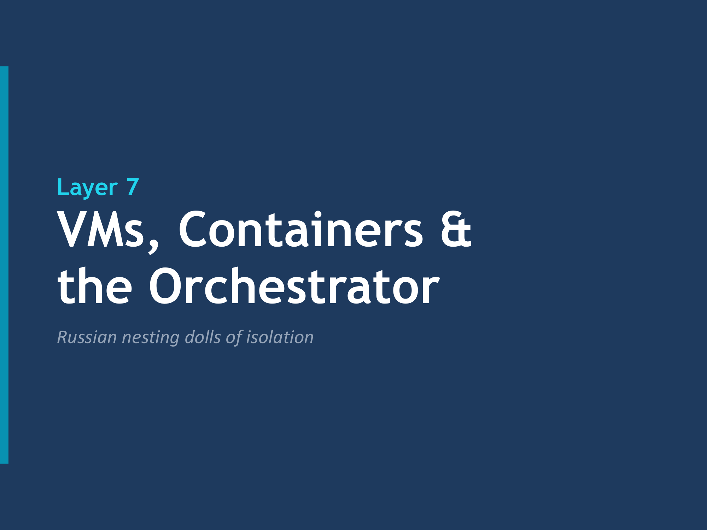
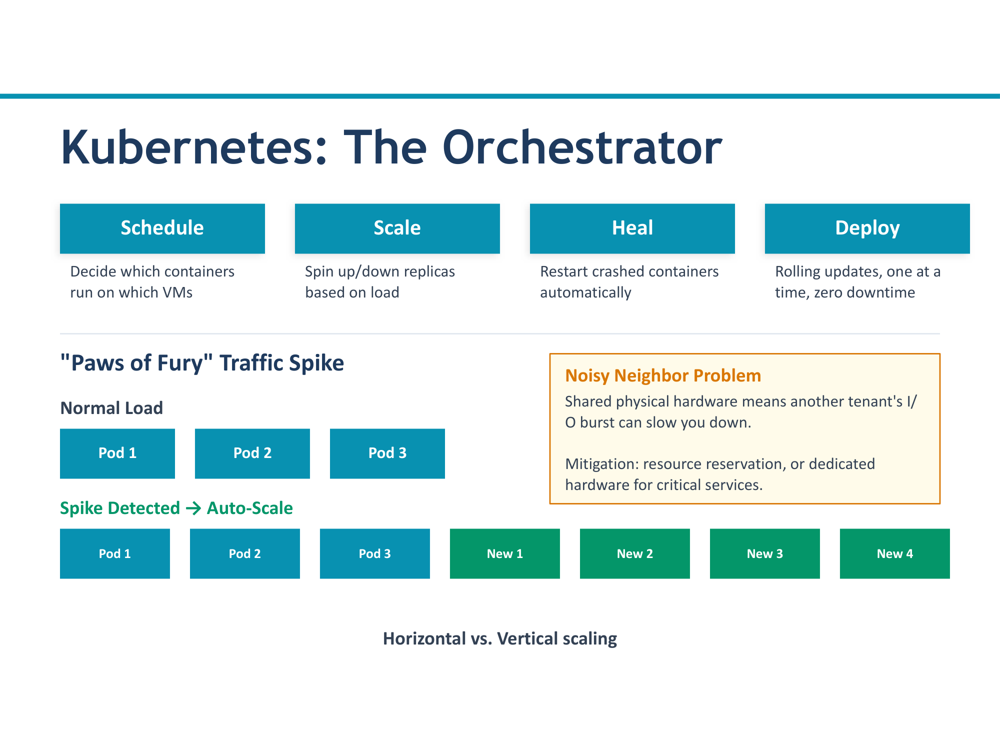
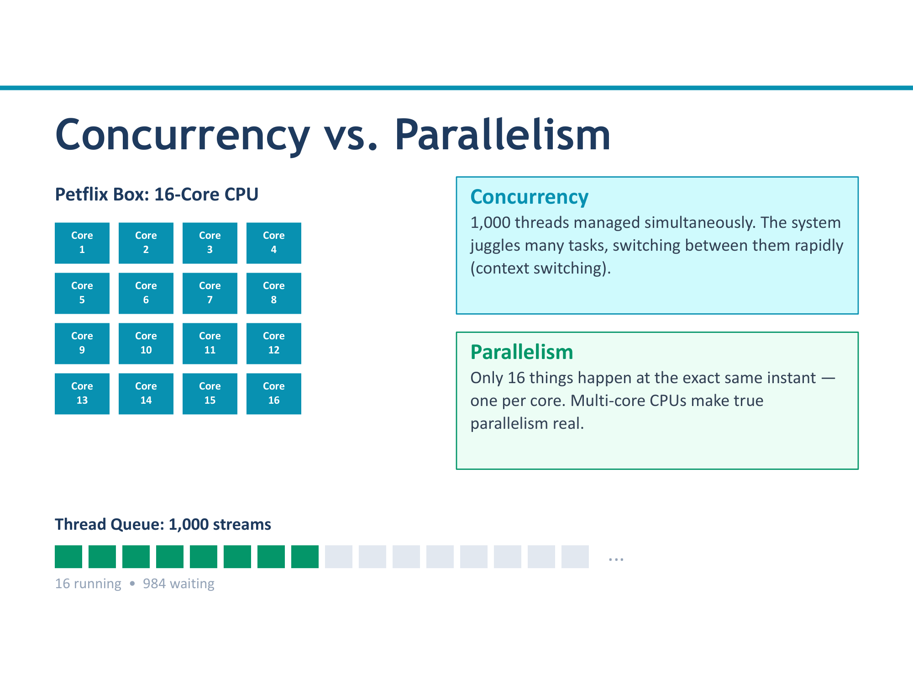

From CDN delivery to the hardware that decodes your cat video
In Part 1, we followed a cat video request from your browser through DNS routing, the API gateway, microservices, and the caching layer. The system figured out what video you want and where the data lives. Now the hard part begins: actually delivering that video to your screen, keeping the service running when things fail, and managing the physical infrastructure underneath it all.
Part 2 picks up at Layer 5 and works its way down to the bare metal — the CPU cores that decode each frame of your cat video.
You have probably noticed that when you stream a video on Netflix, it starts almost instantly — no matter where you are. You might assume the video is flying across the internet from some massive data center in California. In reality, it is coming from a server that might be in the same building as your ISP's local office, just a few miles from your couch.
Netflix operates a program called Open Connect, and the core idea is remarkably simple: instead of streaming every video from a handful of centralized data centers, Netflix installs physical servers — called Open Connect Appliances (OCAs) — directly inside the data centers of Internet Service Providers around the world. In our Petflix analogy, think of these as "Petflix Boxes."

Here is why this matters so much for video. Video files are enormous. A single hour of 4K content can be tens of gigabytes. If every viewer in New York had to pull that data from a data center in Oregon, the backbone internet links between those regions would be crushed. By placing Petflix Boxes inside ISPs, the video traffic stays local. It never has to traverse the long-haul internet backbone at all.
Not all videos are created equal. A static lecture recording — where the camera barely moves and the frame is mostly a presenter next to slides — compresses very differently from a fast-paced action sequence with explosions and rapid camera cuts. Netflix recognized this and developed an approach called per-title encoding.
Consider two videos. Video A is a slow, dialogue-heavy drama with mostly static shots. Video B is an action movie with fast motion, scene transitions, and lots of visual detail. If you encode both at the same bitrate — say, 5 Mbps — Video A will look perfect, while Video B might still show artifacts and blur during fast scenes. Conversely, if you set the bitrate high enough for Video B, you are wasting bandwidth on Video A, which looked great at a fraction of that bitrate.
Per-title encoding solves this by generating a custom "encoding ladder" for each title: a set of resolution and bitrate combinations where each step represents the best visual quality achievable at that bitrate for that specific piece of content.
Even with a perfectly encoded video sitting on a nearby CDN server, there is still the problem of network variability. Your bandwidth is not constant. It fluctuates — maybe someone else in your house starts a video call, maybe your Wi-Fi signal weakens as you walk to the kitchen. The player needs to handle this gracefully.
The video file is not stored as a single monolithic file. It is broken into small chunks (typically 2-10 seconds each), and each chunk is available in multiple quality levels. The player can switch quality at any chunk boundary. This is why you sometimes notice the picture get slightly blurrier for a moment and then sharpen back up — that is ABR in action.
But how does the system decide what counts as "good enough" quality at a given bitrate? Traditional metrics like PSNR (Peak Signal-to-Noise Ratio) measure mathematical differences between the original and compressed frames, but those numbers do not always correlate with what humans actually perceive as good or bad quality.
VMAF allows the encoding pipeline to make intelligent decisions: for a given title, at a given resolution, what is the minimum bitrate that still produces a VMAF score above the acceptable threshold? This is how per-title encoding and ABR come together — the encoding ladder is built using VMAF to ensure every quality step looks good to the human eye, not just good on paper.
Everything we have discussed so far — DNS routing, the API gateway, microservices, caching, CDN delivery — relies on services being available. But what happens when a server crashes? What happens when a hard drive fails, or a network cable gets unplugged, or an entire rack loses power? In a system serving millions of concurrent users, these are not hypothetical scenarios. They happen every day.
The answer is replication: never run just one copy of anything.
But replication introduces a new problem: if you have multiple copies of a service, and that service manages data (like a database), how do you keep the copies in sync? You cannot just let every replica accept writes independently — that leads to conflicting data. This is where the leader-follower model comes in.
In leader-follower replication, one replica is designated as the leader (sometimes called the "primary" or "master"). All write operations go through the leader. The other replicas are followers (or "secondaries" / "replicas") that receive a copy of every write from the leader and apply it to their own data.
Read operations can be served by any replica — leader or follower — which spreads the read load across the entire pod. But writes must funnel through the single leader to maintain a consistent ordering of operations.
Raft is a consensus algorithm designed to be understandable (its predecessor, Paxos, was notoriously difficult to reason about). It solves the problem of leader election and log replication in a distributed system.

Every node in a Raft cluster is in exactly one of three states at any given time: Leader, Follower, or Candidate. Under normal operation, there is one leader and all other nodes are followers.
The leader periodically sends heartbeat messages to all followers. These heartbeats serve two purposes: they replicate new data (if any) and they signal "I am still alive." Each follower has an election timeout — a randomized timer that resets every time a heartbeat arrives.
If a follower's election timeout expires without receiving a heartbeat (meaning the leader is likely down), the follower transitions to the Candidate state. It increments the current term number (a logical clock) and sends a RequestVote message to all other nodes, effectively saying: "I think the leader is dead. Vote for me."
Each node votes for at most one candidate per term. If a candidate receives votes from a majority of nodes (more than half), it becomes the new leader. It immediately starts sending heartbeats to establish its authority and prevent further elections.
Once a leader is established, writes follow a similar majority rule. A write is only considered committed when a majority of replicas acknowledge (ACK) that they have stored the data. The leader does not confirm the write to the client until this majority acknowledgment is received.
We have been talking about services, pods, and replicas — but where do these things actually run? Ultimately, every line of code executes on a physical server somewhere. But modern infrastructure does not run applications directly on bare metal. Instead, there are layers of abstraction that provide isolation, portability, and efficiency.
From the bottom up, the stack looks like this:
The actual hardware: CPU, RAM, storage, network interfaces. A rack-mounted machine in a data center.
Software that sits on top of the physical hardware and allows multiple virtual machines to share it. The hypervisor manages how VMs access the underlying CPU, memory, and I/O.
Each VM runs its own complete operating system. From the perspective of software running inside a VM, it looks and feels like a dedicated physical machine. VMs are fully isolated from each other.
Software (like Docker) that runs inside a VM (or directly on a host OS) and manages containers. The container runtime uses OS-level features (namespaces, cgroups) to isolate processes.
Lightweight, isolated environments that share the host OS kernel. Each container packages an application and its dependencies, but does not carry an entire operating system.

Running a few containers manually is straightforward. Running thousands of containers across hundreds of machines — deciding where each one goes, restarting them when they crash, scaling them up when traffic surges, deploying new versions without downtime — that is an entirely different problem. This is what Kubernetes (often abbreviated as K8s) solves.

Kubernetes handles four essential responsibilities:
When you tell Kubernetes to run a container, it decides which machine in the cluster should run it. It considers available resources (CPU, memory), existing workloads, constraints you have specified (e.g., "this container needs a GPU"), and anti-affinity rules (e.g., "do not put two replicas of the same service on the same physical machine").
Kubernetes can automatically increase or decrease the number of container instances based on observed load. If CPU utilization spikes above a threshold, Kubernetes spins up additional replicas. When load drops, it removes the extras. This is called auto-scaling, and it means you do not pay for (or manage) idle capacity during low-traffic hours.
If a container crashes or a health check fails, Kubernetes automatically restarts it. If an entire node (machine) goes down, Kubernetes reschedules all the containers that were running on that node onto other healthy nodes. This self-healing capability means many failures are resolved without any human intervention.
Kubernetes supports rolling deployments: when you release a new version of a service, Kubernetes gradually replaces old containers with new ones, a few at a time. If the new version starts failing, it can automatically roll back. This enables zero-downtime deployments — users never notice the update happening.
We have finally arrived at the bottom of the stack. After traveling through DNS, the API gateway, microservices, caches, CDNs, replicated pods, VMs, containers, and Kubernetes — your cat video request has reached the actual CPU cores that will decode the compressed video data into frames your screen can display.
This layer is where we confront fundamental concepts of how computers actually execute work: concurrency, parallelism, and the subtle bugs that arise when multiple threads share resources.
These two terms are often used interchangeably, but they mean different things, and understanding the distinction is critical.

Dealing with multiple tasks at once. The tasks may not actually execute simultaneously — they may be interleaved on a single core, with the CPU rapidly switching between them. The key idea is that multiple tasks are in progress at the same time, even if only one is actively executing at any given instant.
Example: A single-core CPU running a web server that handles 100 connections concurrently. It switches between connections so fast that each client feels like they have the server's full attention.
Actually doing multiple tasks at the same time. This requires multiple execution units — multiple CPU cores, multiple machines, or specialized hardware. Two tasks running in parallel are genuinely executing simultaneously.
Example: A quad-core CPU decoding four video frames at the same time, one per core. Each core is independently doing real work in the same clock cycle.
When multiple threads (or processes) access shared data, the result can depend on the order and timing of their execution. This is called a race condition, and it is one of the most common and insidious bugs in concurrent programming.
Suppose two threads both want to increment a shared counter that currently holds the value 10:
Thread A: Read counter (gets 10) → Add 1 → Write counter (writes 11)
Thread B: Read counter (gets 10) → Add 1 → Write counter (writes 11)
If both threads read the value before either writes, they both read 10, both compute 11, and both write 11. The counter ends up at 11 instead of the correct value of 12. One increment is lost. This kind of bug may happen once in a million executions, making it extremely difficult to reproduce and debug.
Locks solve race conditions, but they come with their own costs. They reduce parallelism (threads spend time waiting instead of working), and they introduce the possibility of a much worse problem: deadlocks.
Imagine two resources, X and Y, each protected by its own lock:
Thread A: Acquires lock on X, then tries to acquire lock on Y
Thread B: Acquires lock on Y, then tries to acquire lock on X
If Thread A grabs X and Thread B grabs Y at roughly the same time, they are stuck. Thread A holds X and waits for Y (which B holds). Thread B holds Y and waits for X (which A holds). Neither will ever release their lock because they are both waiting. The system is deadlocked.
Decoding video — decompressing the H.264, H.265, VP9, or AV1 encoded stream back into raw pixel data — is computationally intensive. Doing this entirely in software (running decoder algorithms on general-purpose CPU cores) works, but it consumes significant CPU time and drains battery on mobile devices.
Modern CPUs and GPUs include dedicated hardware video decoders — fixed-function circuits specifically designed to decode video formats. These are not programmable in the general sense; they are purpose-built silicon that can decode video far more efficiently (faster, with less power consumption) than software running on general-purpose cores.
Let us step back and see the complete picture. From the moment you click "play" on a cat video to the moment pixels appear on your screen, your request passes through eight distinct layers, each solving a different challenge.
| Layer | Name | Key Concept | Problem it Solves |
|---|---|---|---|
| 1 | DNS Routing | Geo-routing, failover | Route user to nearest healthy datacenter |
| 2 | API Gateway | Circuit breaker, rate limiting | Prevent cascading failures, manage traffic |
| 3 | Microservices | Parallel fan-out, backoff | Assemble response from multiple services |
| 4 | Data & Caching | Consistency spectrum | Fast reads, manage stale data |
| 5 | CDN | Adaptive bitrate, per-title encoding | Deliver video from nearby with optimal quality |
| 6 | Replication | Raft consensus, leader election | Fault tolerance, data consistency |
| 7 | VMs / Containers | Kubernetes, auto-scaling | Resource isolation, elastic scaling |
| 8 | Cores / Threads | Concurrency, parallelism | Efficient hardware utilization |